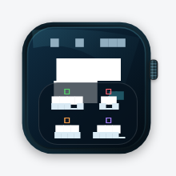
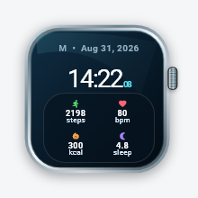
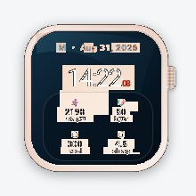
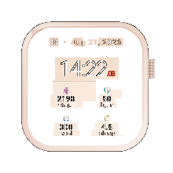

التصنيف المقترح: A. المرجع واللقطة التاريخية كاناAhem (مربعات بدل14:22 وقراءات). الاختبارلايحمّل وجهًا صريحًا. بعدإصلاحtest يظهر14:22:08 و2198/80/300/4.8. يبقىفرقهيكلالساعةبالإضافةللخط؛ لايصلحمرجعAhem للقبولالتلقائي.
Missing explicit loaded face; repaired to RobotoEvidence
Baseline test/dashboard_polish/goldens/live_health_watch_compact_all_metrics.png, commit a3b05edef5f477df55b7486245965cea0848eb3b
Source: test/dashboard_polish/live_health_watch_layout_golden_test.dart
HOLD RED; main QA approves this exact pair individually. A: replace invalid font evidence only after signoff; B: verify intended source history and approve or reclassify C.
Same pixels as previous failed actual: False. Master unchanged, no approval.



